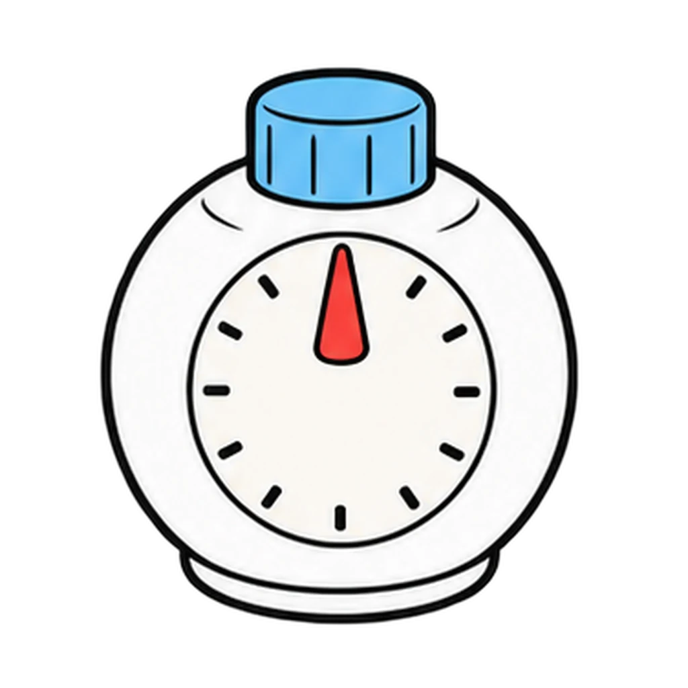

Reviews Lesson 7.3, Lesson 7.5. Reviews the reveal in Lesson 7.3 (the four things an employer is watching during an unexpected question, and one observable sign of each) and the evidence rule that runs through the Lesson 7.3 self-score sheet, the Lesson 7.5 feedback sheet, and the Lesson 7.8 recording rule. Use it the day after ACT FAST, before the mock interviews, so observers walk into Lesson 7.5 already knowing what a sign looks like and why good job does not count. Round 1 is four bins with the tally-sheet wording; round 2 is two bins. Grade 6 can play round 1 only.

Trait Spotter
A sign someone could see or hear appears. Tap the trait it shows: Composure, Communication, Problem solving, or Adaptability. Then tap each line into Evidence or Not evidence.